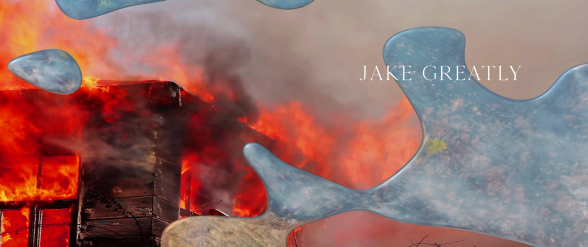
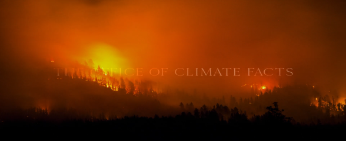

Title Sequence
In this project, I designed a title sequence for a climate fiction story using After Effects. I experimented with visual effects to portray humanity's destructive impact on the environment, aligning with the story's themes. Through storyboarding and exploring various shots and film techniques, I enhanced my knowledge of motion design, aiming to captivate the audience and bring depth to the project.
During this process, I developed my understanding of the motion design process through storyboarding different shots and film techniques to captivate the audience at different moments and add more emotion to the work. To achieve this, I manipulated type and melted footage of various man-made contributors to climate change, juxtaposed with wide-angle, slow-panning shots of the environments they affect. Alongside concept development and sequence planning, I conducted research on various techniques in After Effects to visually support my ideas through motion graphics. Effects such as scenes melting away along with the titles are foreshadowing the narrative of the fiction novel.
 Throughout the project, I enjoyed the process of storyboarding, experimentation, and design, which involved numerous iterations to arrive at my desired final result. During the entire process I explored a range of different motion graphic techniques and developed my style and understanding of how to approach a motion graphics project and where to find inspiration. Overall, this project helped me to hone my skills in motion design and storytelling, while also allowing me to contribute to the conversation around climate change through visual storytelling and I will continue to bring the skills I gained in this project to motion projects in the future.